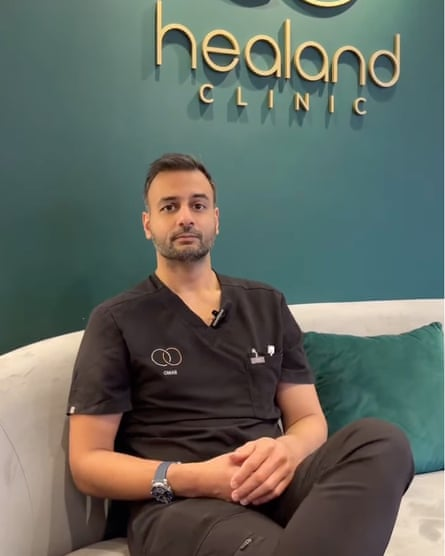
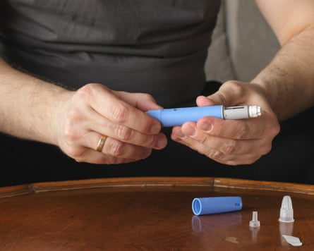
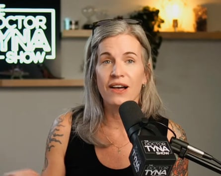

A slim woman standing in a kitchen injects herself in the abdomen. Another jogs. A third kneels on a yoga mat drinking water. The shots are intercut with a doctor telling the viewer: “Usually it’s for people who don’t actually have that much to lose – it’s a bit of a gentler way to get to your target weight.”
The promotional video is from a private clinic in Leicester offering “microdosing”, the latest trend in the weight loss jab revolution .
The experimental approach involves taking less than the recommended dose of a GLP-1 medication such as Ozempic, Mounjaro or Wegovy in the hope of curbing hunger pangs just enough to sustain weight loss.
The use is “off-label” – doctors can prescribe a medicine in a different way than stipulated in its licence if they follow official guidelines – as there is little scientific research to show that it works and is safe.
Nevertheless, the practice is becoming increasingly popular with people who want to shift a few pounds but fall outside the drugs’ target market of patients who are obese, overweight or diabetic.
Promoted by health influencers on social media, microdosing first became popular in the US, where the costs of the drugs are much higher – Novo Nordisk’s Wegovy has a list price of $1,349 (£997) a month while Eli Lilly’s Mounjaro is $1,080. Now the trend is catching on in the UK.
The Healand clinic in Leicester has been offering a microdose treatment for about a year, priced from £175 a month including support. Healand has 750 patients on it so far, who start on a fifth of the normal dose.
Dr Omar Babar, in Leicester, says microdosing benefits perimenopausal women but that his clinic also attracts men.Photograph: Healand Clinic/YouTube
Dr Omar Babar, the reassuring figure speaking in its promotional video, tells the Guardian that microdosing benefits perimenopausal women who, because of hormonal changes, gain weight and struggle with fatigue and brain fog. His clinic also attracts men in their 30s as well as older men up to age 70.
“The idea is not to feel so suppressed, not to feel like you can’t eat any more,” Babar says. “The idea is that you just get a bit more gentle suppression of cravings. A lot of people use it to help curb their alcohol consumption as well.”
His clients typically lose between 5kg (11lb) and 10kg. Nearly all work out several times a week and a lot are in “high-functioning jobs” and want “a bit more control over their health”, Babar says.
The Aestha clinic, in central London, also offers the treatment as a way to lose a little weight or slim down more gradually – its website describes its “refined approach to GLP-1 therapy, utilising about a tenth of standard dosing protocols” – as do pharmacies in Hertfordshire and Kent.
The trend has been gaining traction since last October, when Dr Andrew Huberman, a neuroscientist at Stanford University school of medicine and podcaster, posted an interview on X with the “performance medicine expert” Dr Craig Koniver, who hailed it as a “gamechanger”. Koniver says it helps to avoid the loss of lean muscle mass through more gradual weight loss and does away with “Ozempic face” – a gaunt look that rapid weight loss sometimes causes.
Microdosing as a term originally referred to using tiny quantities of psychedelics to treat mental health problems . In the case of GLP-1 jabs, it involves counting clicks on the pre-filled pen to deliver less than the recommended amount. Users hope to limit side-effects, such as vomiting, cut the cost and experience other health benefits, despite the low dose.
Over the past 10 weeks, Jade, a 32-year-old from London, has been injecting 1mg of Mounjaro every Monday – less than half the standard starting dose of 2.5mg – to reduce inflammation and pain caused by endometriosis, while losing some weight.
To be eligible of a GLP-1 drugs, people must have a BMI of 30 or higher, or 27 to 29 and at least one other weight-related health problem.Photograph: imyskin/Getty
“The inflammation is completely gone,” she says. “I’m not in any pain, whereas in severe pain I’m crying, lying on the floor in absolute agony. I’ve not had any side-effects from Mounjaro because I’m using such a small dose.” She is pleased to have also lost just over a stone (6.4kg). “It took away a bit of the food noise. I wasn’t necessarily thinking about food like I normally do.”
Jade spends £13 a week on Mounjaro – “which is nothing, you spend more in Marks & Spencer on lunch”.
Demand for what have been hailed as “miracle drugs” has spawned a wave of online weight management companies that have registered with the Care Quality Commission to sell the medications in the UK. Those companies include Voy, Manual, Juniper, Numan and CheqUp. In May CheqUp struck a partnership with Weight Watchers as part of the brand’s shift away from dieting after filing for bankruptcy in the US earlier in the month.
However, as of this week online pharmacies are no longer allowed to run adverts for weight-loss injections , after the advertising watchdog cracked down on what has been described as a “wild west” culture of online selling: in the UK prescription only-medications cannot be promoted to the public.
Use of the drugs has soared in recent months: CheqUp estimates 1.25 million people take GLP-1s in the UK; the health data firm IQVIA puts the number at 1.5 million. The vast majority buy them privately because the NHS has restricted treatment to the most obese patients.
James Hunt, deputy chief executive of CheqUp, talks of a revolution. “We have never had a category of medication which has tempted 1.25 million people to say, actually, I’m going to forgo the NHS, I’m going to look after myself and self-medicate.” He estimates that 80% of GLP-1 users are women and a fifth are men, even though the obesity split in the population is 50-50.
Wegovy and Mounjaro are available to buy through private prescription in the UK at all the big high street pharmacy chains and online pharmacies. Prices for a month’s supply for Mounjaro range from £129 to £249, depending on dosage. Prices for Wegovy range from £119 to £299.
To be eligible, people must have a BMI of 30 or over, or 27 to 29 with at least one other weight-related health problem, such as diabetes. They need to complete an online form with questions about their weight and medical history. New rules from the General Pharmaceutical Council mean people should also have an in-person or video consultation, or supporting information from their GP or medical records, to be approved.
The drugs work by mimicking the gut hormone GLP-1 , which regulates blood sugar levels and appetite. Research suggests there are benefits beyond weight loss. A study published in January found the drugs reduced the risk of 42 diseases, including heart disease, cancer, clotting disorders, Alzheimer’s, chronic kidney disease, addiction and a range of psychiatric conditions.
However, hundreds of people taking the medications have reported pancreas-linked problems , prompting health officials to launch fresh research into the drugs’ side-effects.
The US health influencer Dr Tyna Moore promotes microdosing for weight loss and to help with conditions such as high blood pressure.Photograph: YouTube
While CheqUp, Voy, Juniper and Numan stick to guidelines from Britain’s Medicines and Healthcare products Regulatory Agency and do not promote GLP-1 microdosing, many health influencers on social media advocate it as “personalised dosing”, targeting perimenopausal women aged 35-plus in particular. Some athletes also say they microdose to help with weight loss and performance.
The US health influencer Dr Tyna Moore promotes microdosing not just for weight loss but to help with conditions such as high blood pressure, autoimmune diseases and brain fog. Her $2,300 online course, GLP-1s Done Right University, includes advice on microdosing, but she advises against self-dosing and urges users to find a “longevity doc” who prioritises lifestyle.
In the UK, Graham Phillips describes himself as “the pharmacist who gave up drugs” and runs two pharmacies, in Letchworth and Broadstairs, that offer a “prolongevity” programme that promotes weight loss through natural means, such as cutting out ultra-processed foods and monitoring blood glucose levels. Some of his clients are given the 2.5mg starting dose of Mounjaro less frequently than the standard weekly dosage.
Proponents of microdosing such as Dr Omar Babar say its for people who want ‘a bit more control over their health’.Photograph: Viktoriya Skorikova/Getty
“You may not need one at all, but without doubt, some people, even if they’re following all our recommendations, they really struggle with … appetite control and food addiction,”Phillips says. “Using a microdose, you can often switch that off.”
Many doctors and health experts are wary of the practice, however, saying it can lead to unpredictable outcomes. The Lancet said in an article in February: “The practice of microdosing drugs is not new, but there is no evidence that it works for obesity.”
Ann Marie Defnet , a bariatric surgeon at Northwell Health, New York state’s largest healthcare provider, says in its health publication the Well: “Clinical trials are where we figure out whether a treatment is both effective and safe. And none of the big GLP-1 trials studied anything like ‘microdosing’. So right away, if you’re going off-label, you’re stepping into the unknown.”